Fauna
"A fauna dos manguezais representa significativa fonte de alimentos para as populações humanas. Os estoques de peixes, moluscos e crustáceos apresentam expressiva biomassa, constituindo excelentes fontes de proteína animal de alto valor nutricional. Os recursos pesqueiros são considerados como indispensáveis à subsistência das populações tradicionais da zona costeira."
Sabemos que há uma grande biodiversidade nos manguezais. Aqui estão algumas espécies que se destacam nestas áreas:
Aves
Bem-te-vi
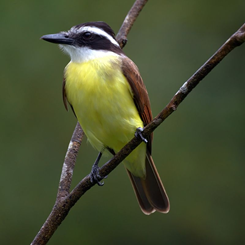Carcará
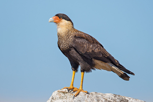Garça (Ardea alba)
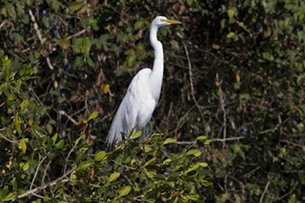Colhereiro (Plataleinae)
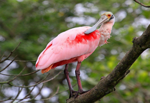Martim-pescador (Guarda Rios)
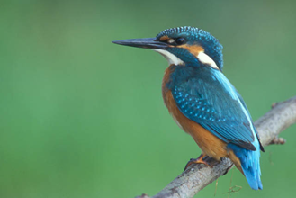Socó – dorminhoco (Savacu)
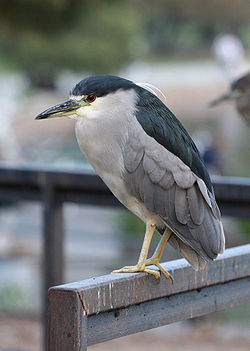Gavião-carijó
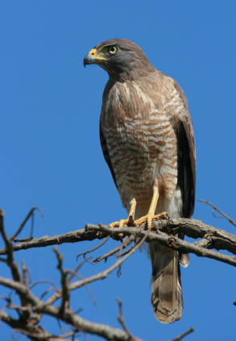Gavião--carrapateiro
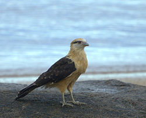Tucano
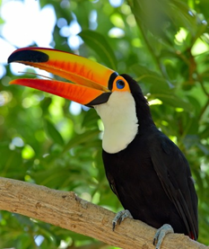Ararinha-azul
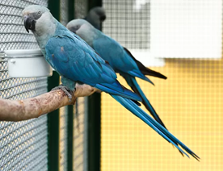Guará vermelho
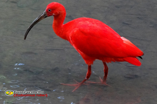O Guará vermelho é um animal muito comum nos mangues de Cubatão.
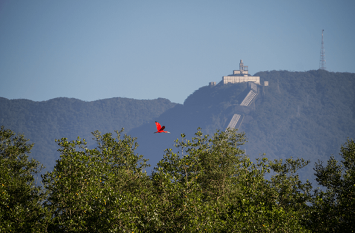Neste cenário, ao fundo, os dutos da Usina Henry Borden, fincados na Serra do Mar, levam água para uma das mais antigas hidrelétricas do país. Um marco do desenvolvimento urbano e industrial de São Paulo na primeira metade do século 20, que hoje divide a paisagem com o majestoso guará-vermelho, uma das aves mais belas do mundo e o símbolo da recuperação ambiental de Cubatão.
Com o crescimento dos polos industriais, devastando os manguezais da Costa Atlântica, os guarás sofreram um grande declínio populacional no Brasil, principalmente na região Sudeste, e entraram para a lista de aves em processo de extinção. Há alguns anos, com a preocupação das indústrias em atender à legislação ambiental, a vegetação do entorno voltou a crescer e oferecer condições para o retorno dos guarás e de outras populações de animais, incluindo os crustáceos, seu principal alimento.
Cientificamente
- Filo: Vertebrata;
- Sub-classe: Neornithes;
- Ordem: Ciconiformes;
- Sub-Ordem: Ciconiae;
- Super-Família: Threskiornitoidea;
- Família: Threskiornithidae;
- Gênero: Eudocimus;
- Espécie: Eudocimus ruber;
- Nome popular: guará, guará vermelho, guará rubro
Alimentação
Essas aves são carnívoros em potencial, ingerindo caramujos, insetos e caranguejos.
Voam vagarosamente sobre a água com a ponta do bico submersa, abrindo e fechando a mandíbula rapidamente em busca de alimento.
Um dos alimentos mais apetitosos, e que se encontra como o número um em seu cardápio, é o caranguejo. Nos bancos de lodo, na área da Cosipa, um dos gêneros de caranguejo mais comuns é o Uca, totalizando cinco espécies, na região do Dique do Furadinho.
A espécie de caranguejo pode variar sentidamente, dependendo do local, salinidade da água que difere, como exemplo do Sul ao Norte do Amazonas, de acordo com as correntes e água doce que atingem a costa setentrional.
Antes de devorar o caranguejo, o guará estirpa a quela maior (garra, com a qual ele se protege de predadores e também procura alimentos). Podemos notar muitas vezes maçaricões, com o bando de guarás, utilizando a mesma área de lodo para se alimentarem.
Coloração
Sua cor, porém, está ligada a um pigmento chamado carotenóide cantaxantina, responsável pela coloração vermelha das penas.
Além desse fator, existem ainda fatores externos, como por exemplo a falta de ingestão de crustáceos não estimula o metabolismo a produzir tais pigmentos, e a ave portanto vai gradativamente perdendo a cor, que fica parecida com a das aves jovens. Esse fenômeno ocorre muito em aves de cativeiro, onde a dieta não é à base de crustáceos.
Mamíferos
Mão-Pelada (Procyon cancrivorus)
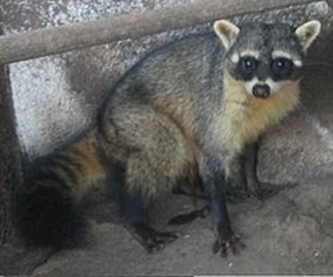Sagui (Callithrix)
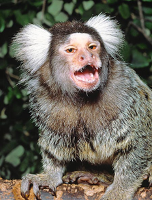Répteis
Crocodilo, cobra, jacaré-de-papo-amarelo, lagarto, tartaruga, entre outros
Lagarto (Lacertilia)
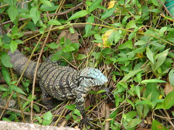Crocodilo (Crocodylidae)
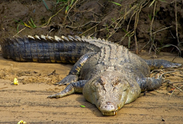Peixes
Lambari
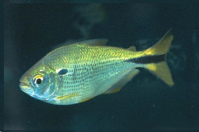Garoupa
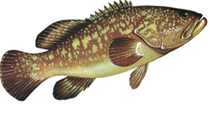Robalo
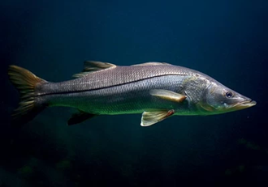Sardinha
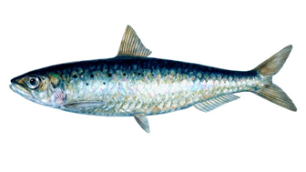Invertebrados - aranha, camarão, caranguejo, chama-maré, craca, lagosta, mariposa, mexilhão, minhoca, mosca, mosquito, siri, entre outros.
Aratu-vermelho
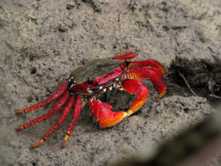Berbigão
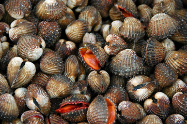Goiamum
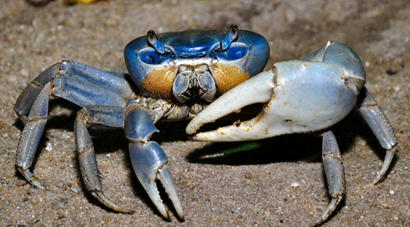Berçários naturais
Os mangues, para além de extrema importância económica, são também o berço de várias espécies de crustáceos, plantas, aves e peixes.
Um exemplo são os camarões. Estes pequenos crustáceos se reproduzem no mar, mas suas larvas migram para os mangues a fim de se alimentarem e crescerem antes de retornar ao mar. Um outro crustáceo é o famoso siri azul. Com cerca de quinze centímetros de envergadura e com pinças rápidas estas criaturas vivem em praias lodosas, tanto rasas como profundas e consegue subir riachos.
Outras espécies que costumam usar os mangues como berço para as suas crias são os robalos, as tainhas, garças, guarás e até mesmo seres microscópicos como o plâncton. Nenhuma espécie marinha citada acima poderia viver sem a existência dos manguezais.
O caranguejo
É um crustáceo que vive nos manguezais e eles têm cores variadas, como azul, verde, amarelo e marrom. Quando são cozidos podem mudar de cor, o caranguejo amarelo e marrom fica meio alaranjados.
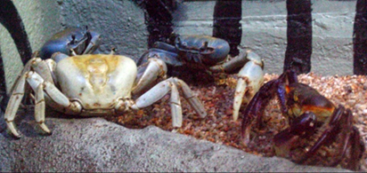O tamanho ideal para podermos comer um caranguejo e entre 6cm (o permitido pelo Ibama), para eles chegarem a esse tamanho demora em média 7 anos, fora dessas normas o caranguejo pode estar entrando em extinção.
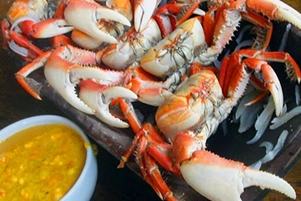Para diferenciar o caranguejo macho do caranguejo fêmea basta observa o abdômen do animal. O caranguejo macho possui o abdômen menor, possuem mais pelos nas patas e são maiores. Já o caranguejo fêmeo possui o abdômen maior para acomodar os ovinhos, são menores e não possuem pelos como o macho.
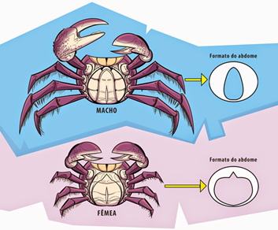Um caranguejo fêmea pode chegar a ter entre 80 a 250 mil ovos. Os filhotes de caranguejo demoram cerca de 2 e 3 anos para chegar a fase adulta. (Eduarda; Jamile; Mirella; Nayane, Souza, N; Emilly; Ian; Stephany,2014. O caranguejo, peixes, moluscos e crustáceos são os principais habitantes deste ecossistema tão peculiar. Porém, mamíferos, répteis até criaturas microscópicas também usufruem deste ambiente.
Por contarem com um solo extremamente nutritivo, movimento hídrico suave e uma vegetação que serve de abrigo, e acumularem muita matéria orgânica, os manguezais acabam servindo de refúgio principalmente para organismos jovens em suas primeiras etapas de desenvolvimento.
Por isso muito dos animais que habitam os manguezais não passam toda a sua vida neste ambiente. Os camarões, por exemplo, após o nascimento da nova geração em alto mar, os indivíduos migram para dentro do manguezal e lá permanecem durante a fase de crescimento, passando de larvas a camarões jovens. Quando ficam um pouco mais maduros, voltam ao oceano.
Mas existem também os animais que têm no manguezal a sua principal morada. É o caso dos caranguejos, sururus, taiobas, mariscos em geral e ostras. Estes animais acabaram por desenvolver habilidades adaptativas que permitem a eles suportarem as variações diárias do ecossistema. Os caranguejos, por exemplo, enterram-se em galerias que escavam no solo, na maré baixa, e sobem nos troncos e raízes das árvores durante a maré cheia.
Lontra
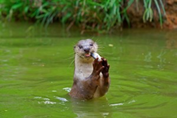Peixes como sardinhas, garoupas e tainhas também frequentam o manguezal para reprodução e alimentação. Anfíbios, répteis e mamíferos, como a lontra, utilizam o manguezal como refúgio, fonte de alimento e local para reprodução.
Em um ambiente tão cheio de vida, não poderiam faltar também as aves, principalmente as chamadas aves marinhas. Para elas, o manguezal é um ambiente importantíssimo e pode ser utilizado como local de reprodução, alimentação e descanso, principalmente para as aves migratórias. As mais comuns são as garças, os guarás, o colhereiro e o martim-pescador.